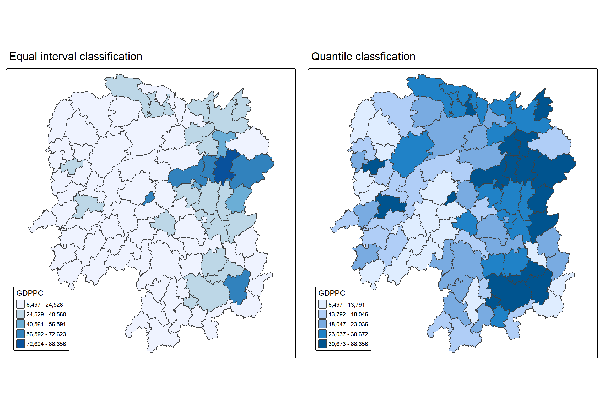
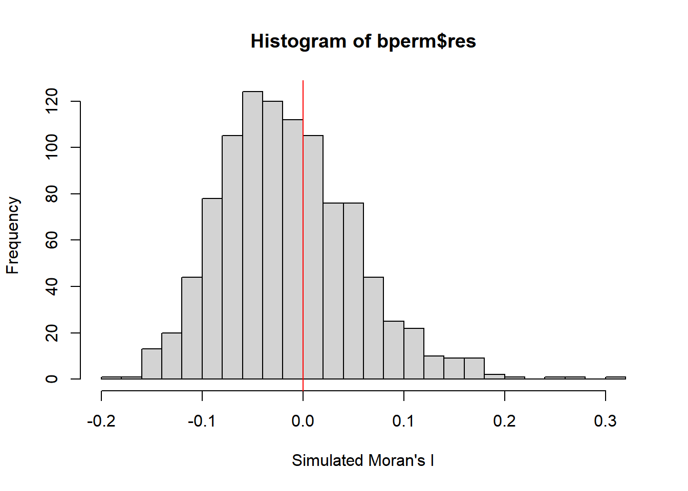
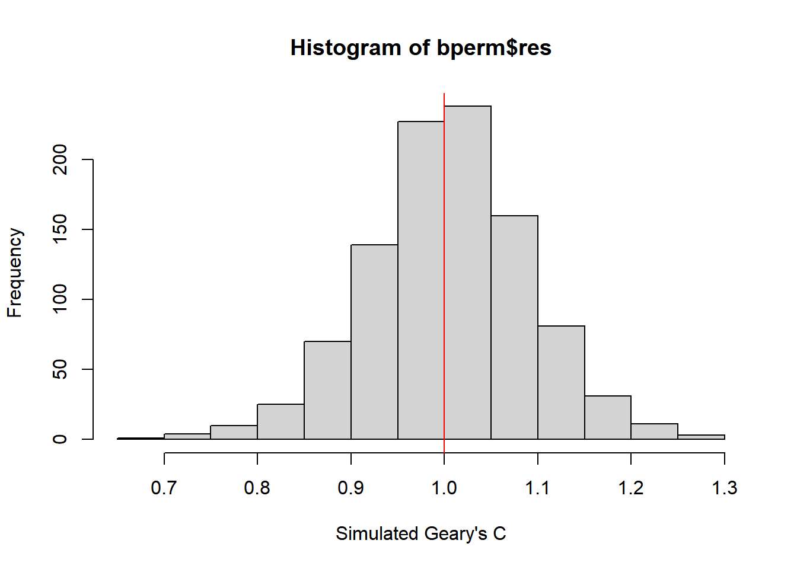
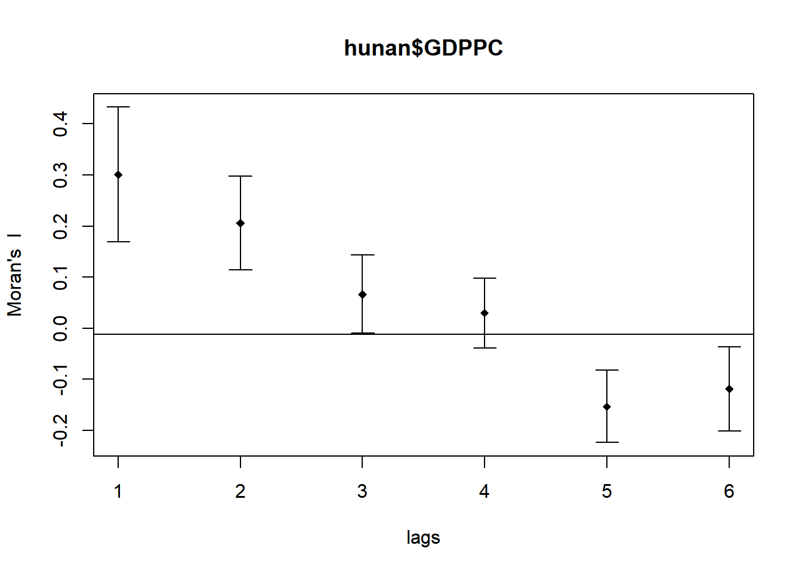
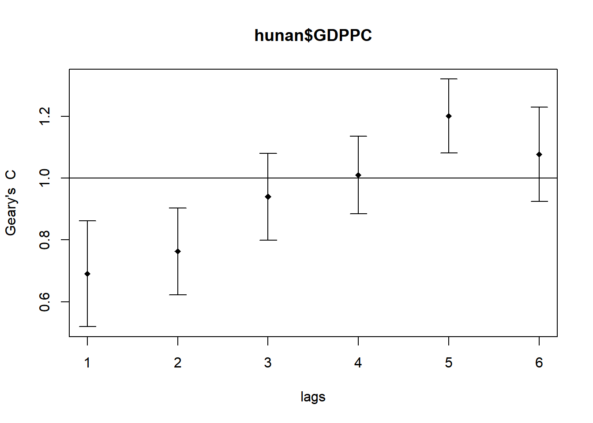

pacman:: p_load(sf, spdep, tmap, tidyverse)05-1: Global Measures of Spatial Autocorrelation
1 Overview
Spatial Autocorrelation is a geographical concept based on the idea that “near things are more related than distant things.”
| SA | Description | Example |
|---|---|---|
| Positive | occurs when similar values are spatially clustered | High-income households concentrated in neighbouring areas |
| Zero | indicates complete randomness | Early outbreak of Covid-19 |
| Negative | occurs when similar values are deliberately dispersed | Supermarkets locating apart to avoid direct competition |
In this exercise, we understand Global Measures of Spatial Autocorrelation (GMSA) by using functions from spdep package:
- plot Moran scatter plot
- compute and plot spatial correlogram
- provide statistically correct interpretation
2 Getting Started
2.1 The Analytical Question
The main development objective for urban planners is to achieve equal development in the region. Through a case study of GPD Per capita (a development indicator)in Hunan China, we examine the spatial pattern in the area and try to understand:
NoteQuestions:
- if development is equally distributed?
- if not, is spatial clustering evident?
- If confirmed, where are the clusters?
2.2 The Study Area and Data
The following two data sets are used here:
| Data Name | Format | Descrption |
|---|---|---|
| Hunan | shapefile | Geospatial data for county boundary layer |
| Hunan_2012 | csv | Aspatial data for Hunan’s local development indicators in 2012 |
2.3 The Analytical Packages
A total of five R packages will be used in this exercise.
| Package | Description |
|---|---|
| sf | Simple Features, a new R package which handles importing, managing, and processing vector-based geospatial data. |
| spdep | Tools for computing spatial weights and calculating spatially lagged variables. |
| tmap | Creates cartographic quality static or interactive choropleth maps. |
| tidyverse | A collection of R packages for data import, cleaning, transformation, and visualisation (e.g., readr, dplyr, tidyr, ggplot2). |
After installation via install.packages(), we load them into R environment using the code below.
2.4 Getting the Data into R environment
2.4.1 Importing Geospatial Data in shapefile
The code chunk below uses st_read() from sf package to import hunan county layer in shapefile into R as a simple feature object.
hunan <- st_read(dsn = "data/geospatial", layer = "hunan")Reading layer `hunan' from data source
`C:\lsrgc\ISSS626-yiqiong-pan\Hands-on_Ex\Hands-on_Ex05\data\geospatial'
using driver `ESRI Shapefile'
Simple feature collection with 88 features and 7 fields
Geometry type: POLYGON
Dimension: XY
Bounding box: xmin: 108.7831 ymin: 24.6342 xmax: 114.2544 ymax: 30.12812
Geodetic CRS: WGS 84
2.4.2 Importing Aspatial Data in csv
The code chunk below uses read_csv() from readr package to import hunan_2012.csv as a tibble dataframe.
hunan2012 <- read_csv ("data/aspatial/hunan_2012.csv")2.4.3 Performing Relational Join
l The code chunk below uses left_join() from dplyr package to join the SaptialPloygonsDataFrame with attribute fields from dataframe and use select() from dplyr to extract required fields. The columns with same name are used to perform the join.
hunan <- left_join(hunan, hunan2012) %>%
select(1:4, 7,15)2.4.4 Visualising Regional Development Indicator
The code chunk below uses qtm() from tmap to plot base and choropleth maps to show the ditribtution of GDPPC 2012 in Hunan. Equal interval groups by same range of values whereas Quantile defines the group by rank/count, but value ranges may vary.
More mapping tips can be found here.
equal <- tm_shape(hunan) +
tm_polygons(fill = "GDPPC",
fill.scale = tm_scale_intervals(
style = "equal",
n = 5,
values = "brewer.blues"
)) +
tm_borders(fill_alpha= 0.5) +
tm_layout(legend.position = c("left", "bottom"),
main.title = "Equal interval classification")
quantile <- tm_shape(hunan) +
tm_polygons(fill = "GDPPC",
fill.scale = tm_scale_intervals(
style = "quantile",
n = 5)) +
tm_borders(fill_alpha = 0.5) +
tm_layout(legend.position = c("left", "bottom"),
main.title = "Quantile classfication")
tmap_arrange(equal, quantile, asp = 1, ncol = 2)
3 Global Measure of Spatial Autocorrelation
We try to compute global spatial autocorrelation statistics and perform spatial complete randomness test for global spatial autocorrelation.
3.1 Computing Contiguity Spatial Weights
The code chunk below uses poly2nb() of spdep package to calculate contiguity weights metrics for the study area hunan.The function allows us to specify the type of contiguity by setting the queen argument to either TRUE (Queen contiguity) or FALSE (Rook contiguity). The difference between Queen and Rook contiguity is that Queen considers both shared edges and shared points (corners), whereas Rook considers only shared edges. As a result, Queen contiguity typically yields more neighbours for each region.
wm_q <- poly2nb(hunan, queen = TRUE)
summary(wm_q)Neighbour list object:
Number of regions: 88
Number of nonzero links: 448
Percentage nonzero weights: 5.785124
Average number of links: 5.090909
Link number distribution:
1 2 3 4 5 6 7 8 9 11
2 2 12 16 24 14 11 4 2 1
2 least connected regions:
30 65 with 1 link
1 most connected region:
85 with 11 linksThe summary output shows that across the 88 regions in the dataset, the average region has about 5–6 neighbours. Region 85 has the most neighbours with 11 links, while regions 30 and 65 have the fewest, with only 1 link each.
3.2 Row-standardised Weights Matrix
The code chunk usesnb2listw() to turn neighbour list wm_q matrix to into weights object. zero.policy = TRUE assigns 0 weights to island (zero link) and avoid errors.
Each neighbouring polygon is assigned an equal weight (style="W"), calculated as 1/ number of neighbours. The weighted income values are then summed.
One drawback is the edge polygons which have fewer neighbours and may distort spatial autocorrelation. Here we use style=“W” for simplicity, though more robust alternatives like style=“B” (Binary (1/0) are available.
rswm_q <- nb2listw(wm_q, style = "W", zero.policy = TRUE)
rswm_qCharacteristics of weights list object:
Neighbour list object:
Number of regions: 88
Number of nonzero links: 448
Percentage nonzero weights: 5.785124
Average number of links: 5.090909
Weights style: W
Weights constants summary:
n nn S0 S1 S2
W 88 7744 88 37.86334 365.9147
NoteFunction
nb2listw()
Input: requires an object of class
nb(neighbours list).style: “B”: basic inary coding (1 = neighbour, 0 = not). “W”: row-standardised (row sums = 1). “C”: globally standardised (weights sum to n). “U”: equal to C / number of neighbours (weights sum = 1). “S”: variance-stabilising scheme (Tiefelsdorf et al., 1999).* “minmax”:* rescaled weights between 0 and 1.
zero.policy: FALSE (default): errors out if a region has no neighbours. **TRUE:* *assigns a zero-weight vector for such regions.
4 GMSA: Moran’s I
The Moran’s I statistics could be conducted by using moran.test() from spdep package. Global Moran’s I measures how the features differ from the values in the study area as a whole,from -1 to 1, similar with Persons’r (correlation coefficient).
4.1 Moran’s I Test
The code chunk below calls moran.test() to test Moran’s I.
Interpretation Rule:
- positive (I>0): Clustered
- negative (I<0): Dispersed
- approximately zero: Randomly Distributed
moran.test(hunan$GDPPC, listw = rswm_q,
zero.policy = TRUE, na.action = na.omit)
Moran I test under randomisation
data: hunan$GDPPC
weights: rswm_q
Moran I statistic standard deviate = 4.7351, p-value = 1.095e-06
alternative hypothesis: greater
sample estimates:
Moran I statistic Expectation Variance
0.300749970 -0.011494253 0.004348351
NoteFunction
moran.test()
-
Input: must be a numeric vector, with same length as the
nblist inlistw -
listw: a
listwobject for weights that computed bynb2listw - alternative: “greater” default, “two.sided”, “less”
-
na.action:
na.faildefault,na.omit,na.exclude
Note
What statistical conclusion can you draw from the output above?
The summary shows Moran’s I z-score is 4.7, observed I ($statistic) is 0.3, expected I is -0.011, with a p-value of 0.000001. At the 95% confidence level, we reject the null hypothesis of spatial randomness and conclude that there is statistically significant clustering in the distribution of wealth.
4.2 Monte Carlo Moran’s I
The code chunk below performs permutation test for Moran’s I statistic with 1000 simulation by using moran.mc() of spdep.
set.seed(1234)
bperm = moran.mc(hunan$GDPPC, listw = rswm_q, nsim = 999,
zero.policy = TRUE, na.action = na.omit)
bperm
Monte-Carlo simulation of Moran I
data: hunan$GDPPC
weights: rswm_q
number of simulations + 1: 1000
statistic = 0.30075, observed rank = 1000, p-value = 0.001
alternative hypothesis: greatersummary(bperm) Length Class Mode
statistic 1 -none- numeric
parameter 1 -none- numeric
p.value 1 -none- numeric
alternative 1 -none- character
method 1 -none- character
data.name 1 -none- character
res 1000 -none- numeric head(bperm)$statistic
statistic
0.30075
$parameter
observed rank
1000
$p.value
[1] 0.001
$alternative
[1] "greater"
$method
[1] "Monte-Carlo simulation of Moran I"
$data.name
[1] "hunan$GDPPC \nweights: rswm_q \nnumber of simulations + 1: 1000 \n"bperm$res[1][1] 0.0579802
Note
What statistical conclusion can you draw from the output above?
The summary shows the observed Moran’s I is 0.3. Since I> 0 over 1000 simulation, we conclude that there is statistically significant clustering/clustering in the distribution of wealth at 95% confidence.
4.3 Visualising Monte Carlo Moran’s I
The code chunk below uses hist() and abline() of R Graphic to visualise the simulated Moran’s I test in detail.
mean(bperm$res[1:999])[1] -0.01504572var(bperm$res[1:999])[1] 0.004371574summary(bperm$res[1:999]) Min. 1st Qu. Median Mean 3rd Qu. Max.
-0.18339 -0.06168 -0.02125 -0.01505 0.02611 0.27593 
bperm
Monte-Carlo simulation of Moran I
data: hunan$GDPPC
weights: rswm_q
number of simulations + 1: 1000
statistic = 0.30075, observed rank = 1000, p-value = 0.001
alternative hypothesis: greater
Note
What statistical conclusion can you draw from the output above?
The histogram of simulatedMoran’s I values (999 permutations) is roughly bell-shaped and centred around 0, which matches the null expectation under complete spatial randomness (CSR). The observed Moran’s I is 0.3 which lies at the edge of right tail of simulated distribution. Since I > 1, this indicates positive spatial autocorrelation.
5 GMSA: Geary’s C
Geary’s C measure the feature difference between neigbhours and examine the local dissimilarity, valued from 0 to infinite. Both Moran’s I and Geary’s C exclude self-comparison (wii = 0). They only compare each observation with its neighbours, never with itself.
Interpretation Rule:
- < 1 is clustering (similarity);
- = 1 is randomness;
- > 1 is dispersion (dissimilarity).
5.1 Geary’s C Test
The code chunk below uses geary.test() to test spatial autocorrelation.
geary.test(hunan$GDPPC, listw = rswm_q)
Geary C test under randomisation
data: hunan$GDPPC
weights: rswm_q
Geary C statistic standard deviate = 3.6108, p-value = 0.0001526
alternative hypothesis: Expectation greater than statistic
sample estimates:
Geary C statistic Expectation Variance
0.6907223 1.0000000 0.0073364
Note
What statistical conclusion can you draw from the output above?
The statistic from Geary’s C test reveals z-score is 4.61, p-value is 0.00015, and the observed Geary’s C is 0.69. When C <1, this provides strong evidence against complete spatial randomness (CSR) and indicates it indicates positive Spatial Autocorrelation and similarity.
5.2 Monte Carlo Geary’s C
The code chunk below uses geary.mc() of spdep to perform permutation test for Geary’s C with 1000 simulation.
set.seed(1234)
bperm = geary.mc(hunan$GDPPC, listw = rswm_q, nsim = 999)
bperm
Monte-Carlo simulation of Geary C
data: hunan$GDPPC
weights: rswm_q
number of simulations + 1: 1000
statistic = 0.69072, observed rank = 1, p-value = 0.001
alternative hypothesis: greater
Note
What statistical conclusion can you draw from the output above?
The statistic from Monte Carlo Geary’s C test reveals under 95% confidence, p-value is 0.001, and the observed Geary’s C is 0.69. When C <1 after 1000 simulations, this provides strong evidence against complete spatial randomness (CSR) and indicates it indicates strong positive Spatial Autocorrelation and similarity well beyond the conventional 95% threshold.
5.3 Visualising the Monte Carlo Geary’s C
Next we use the function hist() and abline() to visualise Monte Carlo Geary’s C.
mean(bperm$res[1:999])[1] 1.004402var(bperm$res)[1] 0.007527444summary(bperm$res) Min. 1st Qu. Median Mean 3rd Qu. Max.
0.6907 0.9501 1.0050 1.0041 1.0594 1.2722 
Note
What statistical conclusion can you draw from the output above?
The histogram of simulated Geary’s C values (1000 permutations) is roughly bell-shaped and centred around 1, which matches the null expectation under complete spatial randomness (CSR). The observed Geary’s C is 0.69 which lies at the left tail of simulated distribution. since C <1 and I>0, both confirm positive spatial autocorrelation at confidence level of 95%.
6 Spatial Correlograms
Here we explore patterns of spatial autocorrelation in data or model residuals using spatial correlograms. Although the correlograms are not fundamental in geostatisics like variograms,they provide richer information than vairograms.We can see correlation changes as distance increases(lag).
6.1 Computing and Plotting Moran’s I correlogram
The code chunk below uses sp.correlogram() of spdep package to compute a 6-lag spatial correlogram of GDPPC and use plot() of base Graph to visualise the output.
MI_corr <- sp.correlogram(wm_q, # nb object
hunan$GDPPC, # numeric vector
order = 6, # maximum lag order
method = "I", # Moran's I
style = "W") # row-standardised
plot(MI_corr)
print(MI_corr)Spatial correlogram for hunan$GDPPC
method: Moran's I
estimate expectation variance standard deviate Pr(I) two sided
1 (88) 0.3007500 -0.0114943 0.0043484 4.7351 2.189e-06 ***
2 (88) 0.2060084 -0.0114943 0.0020962 4.7505 2.029e-06 ***
3 (88) 0.0668273 -0.0114943 0.0014602 2.0496 0.040400 *
4 (88) 0.0299470 -0.0114943 0.0011717 1.2107 0.226015
5 (88) -0.1530471 -0.0114943 0.0012440 -4.0134 5.984e-05 ***
6 (88) -0.1187070 -0.0114943 0.0016791 -2.6164 0.008886 **
---
Signif. codes: 0 '***' 0.001 '**' 0.01 '*' 0.05 '.' 0.1 ' ' 1
Note
What statistical conclusion can you draw from the output above?
The spatial correlogram shows that Moran’s I decreases with distance: starting positive (clustering) at short lags, reaching CSR around step 4 (p= 0.22 > 0.05), and becoming significantly negative (dispersion) at longer distances.
6.2 Compute and Plotting Geary’s C correlogram
Next we use sp.correlogram() of spdep package to compute 6-lag spatial correlogram with Geary’C and draw chart using plot().
GC_corr <- sp.correlogram(wm_q, # nb
hunan$GDPPC, # vector
order = 6, # lags
method = "C", #Geary's C
style = "W") # row-standardised
plot(GC_corr)
print(GC_corr)Spatial correlogram for hunan$GDPPC
method: Geary's C
estimate expectation variance standard deviate Pr(I) two sided
1 (88) 0.6907223 1.0000000 0.0073364 -3.6108 0.0003052 ***
2 (88) 0.7630197 1.0000000 0.0049126 -3.3811 0.0007220 ***
3 (88) 0.9397299 1.0000000 0.0049005 -0.8610 0.3892612
4 (88) 1.0098462 1.0000000 0.0039631 0.1564 0.8757128
5 (88) 1.2008204 1.0000000 0.0035568 3.3673 0.0007592 ***
6 (88) 1.0773386 1.0000000 0.0058042 1.0151 0.3100407
---
Signif. codes: 0 '***' 0.001 '**' 0.01 '*' 0.05 '.' 0.1 ' ' 1
Note
What statistical conclusion can you draw from the output above?
The spatial correlogram shows that Geary’s C increases with distance: starting negative (dispersion/ dissimilarity) at short lags, reaching CSR around step 4 (p= 0.88 > 0.05), and becoming significantly positive (clustering/ similarity) at longer distances.
7 Reference
Kam, T. S. 8 Spatial Weights and Applications. R for Geospatial Data Science and Analytics. https://r4gdsa.netlify.app/chap09